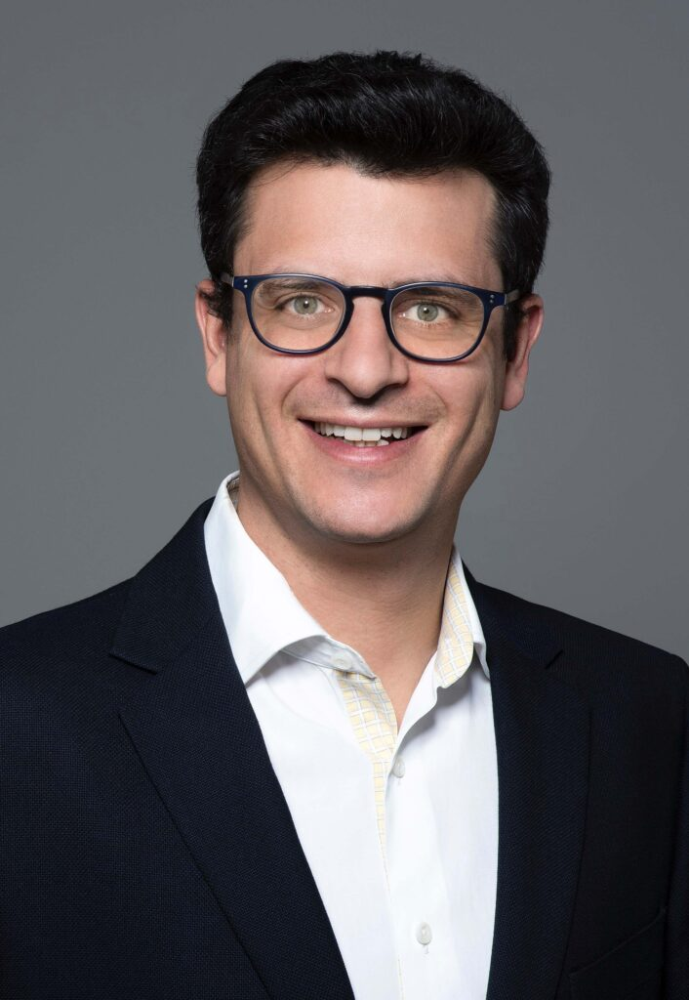

Meet the Founder
Pierre-Edouard Wahl (PE)Pierre-Edouard Wahl (PE) is a prominent figure in the blockchain industry, with over a decade of experience driving innovation and progress in this transformative space. He has held several leadership positions in top-tier companies, including Head of Blockchain for PwC Switzerland and founder of the blockchain department at Credit Suisse.
PE has also co-founded a private investment office, dedicated to making positive impact investments in Blockchain, Food & Agri Tech, and Health & Wellbeing Sciences. His experience in both fund structures and direct investments has given him a unique perspective on investing and capital allocation.
PE's passion for blockchain technology began in 2012 when he moved to Silicon Valley and launched a B2B digital exchange. Since then, he has been a vocal advocate for the transformative potential of blockchain, challenging the status quo, and working to enable firms to create innovative, sustainable, trusted, and resilient business models.
In 2022, PE founded pew256, a blockchain consultancy firm that provides strategic advisory services to businesses seeking to leverage the power of blockchain technology. Through pew256, PE continues to help clients unlock the full potential of this groundbreaking technology, pushing the boundaries of what is possible in the blockchain space.